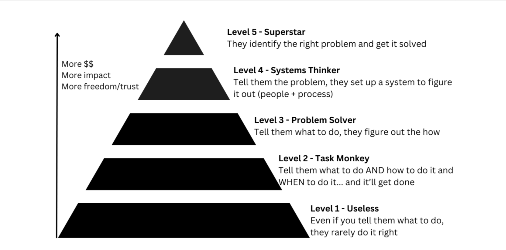

A voice-dictated session that started with a tension — constraints enable creativity, but you remove them for your team. From there: a 5-level development pyramid for interns, speed as a prioritization strategy (and why it's personal bias), consulting frameworks running silently in the background, answer-first living and its shadow side, where the solve instinct breaks down, Kahneman's System 1 & 2 remixed as Solve vs Absorb, Ariely's Predictably Irrational, Buridan's ass, three genuinely unsolvable scenarios, and how to build friction into a fast engine. This is the full, unedited conversation — only typos from voice-to-text have been fixed.
Here's something I've been noticing across your sessions. You've built a philosophy that constraints enable creativity — acrylic paints forcing better colour mixing, C-suite time pressure forcing answer-first communication, chip design limitations forcing architectural innovation.
But at Kytchens, you build systems that remove constraints for your junior team — checklists, templates, step-by-step WhatsApp instructions. You're giving them the exact scaffolding that eliminates the creative friction you say matters.
Are you creating efficiency at the cost of development?
Wow, that's insane pattern recognition. Let me match this with a post that I shared with Sunny and Anirudh specifically, and this is what it said:

I was brutally honest with them and also very optimistic about their career progression. I told them that especially as interns and as very young interns who've never had any experience in the past, pretty much everyone starts at Level 1 and then grows up levels over time. I realized that I had to get them to work like Level 2 at the task monkey stage so that they just build the muscle of how things are done and when they need to be done. I'm realizing that they would complete every minor task and ping me or tell me or ask me questions for small, small things. I told them that it's about time that they move from Level 2 to Level 3, where they don't break my flow all the time and I tell them what to do, and then they figure out how. I think that progression is happening really fast. For example, Sunny joined just a month and a half back. I think he's very close to Level 3 already.
My message to both of them was that I will be happiest and I will be in a place where I am confident about them when I am out of the system and they are able to identify the problems and get it solved. That is Level 5, right? If I'm not present or, let's say, I'm on leave and somebody comes and tells them a problem, they figure out how to do it, right? That's Level 4. I think that Level 5 is not a far-fetched ask. It's just a matter of teaching how to find problems and choosing which problems to solve. I don't think it's necessarily always about constraints or building so many systems for them that it is allowing or disallowing them from growth, but more on just gradual growth at a very fast pace.
I do not fully think that I'm creating efficiency at the cost of development, because if that was the case, I would actually just spin up sub-agents and do it myself. Why would I hand it over to them and get it done by them if I was not focusing on their development? Maybe in some cases I may have eliminated too many constraints, yes, but maybe in the future I keep things intentionally slightly more vague and have them figure out some problems and solutions to things.
One of the things that I'd ask these boys to do was to send me videos on a daily basis, whatever they found interesting on YouTube. The core idea was to have them learn more through YouTube and understand what the top users and people at the front of this are doing. That's a great way to see where you stand versus where you can be. And I think asking them to send me videos on a daily basis was just forcing the build of that muscle where they can learn by themselves. The moment they can do that, find the right video to watch or have the muscle to watch a shit ton of videos and start pattern matching, I think they can practice. It will solve any problem. YouTube is a gold mine of information, and anybody who believes that they need to sign up for any course of any kind in today's world for learning is pretty much surely underutilizing the available resources.
The YouTube exercise is the most interesting thing you said though. Because that's not a task — it's a meta-skill injection. You're not teaching them what to learn, you're teaching them how to find what to learn. That's the muscle behind Level 5. If they can pattern-match across a hundred videos and identify what's signal vs noise, they can do that with problems too.
But here's where I want to push: the jump from Level 4 to Level 5 is qualitatively different from every other jump on that pyramid.
Level 1→2 is discipline. 2→3 is autonomy. 3→4 is abstraction. Those are all teachable with progressively less scaffolding, which is exactly what you're doing.
But 4→5 — "identify the right problem" — that's judgment. And judgment comes from pattern recognition built over years of exposure to consequences. You built yours across 6.5 years at Deloitte watching senior partners navigate ambiguity, plus the intensity of building Kytchens from the ops side.
So my question is: can you actually teach Level 5, or can you only create the conditions for it to emerge? Because if it's the latter, then the real question isn't about your systems being too constraining — it's about whether Sunny and Anirudh are getting enough exposure to consequences. Do they see what happens when the wrong problem gets solved? Do they feel the cost of a bad prioritization call? Or does your system catch those mistakes before they become expensive enough to be educational?
To be very honest, I think when you come to Level 5 or are near Level 5, you essentially are a problem solver, right? You already have a shit ton of problems at your table because you're so good at problem solving, and then you are forced to make that choice of prioritization. It's not necessary that you will always make the right choice, but somebody with more context or somebody with just a larger understanding of the business or what's going on can help you with that.
I think when you are at Level 4, that is actually very linked to Level 5, because if you're really good at Level 4, like I said, your table will be swarmed with problems from everyone, because that's just how work becomes where you attract problems essentially. Then it becomes about ruthless prioritization and figuring out what to prioritize. I agree that's a hard skill, but I don't think it's difficult in any sense. If somebody can figure out how to learn and how to solve problems that are complex and not taken up by everyone, they can surely learn how to prioritize.
Besides that, there is always somebody in the company who can help you figure out what to prioritize, unless you're the founder yourself. Even in that case, you will have mentors or investors or somebody else who can help you prioritize or give you guidance or give you a third eye. That's what I'm seeing in my case. I very routinely go back to Bansi and tell him that I will really need to focus on these two ideas for now and then park the other ones for later or groom the team so that they can solve some of these by themselves instead of relying on me.
What's also very important is to be super fast about problem solving and also do sense checks at routine intervals. You can be stuck on a problem for very long and then realize that some of, or most of, it didn't make sense. If you are fast and you build something really quickly and realize that maybe wasn't the time, maybe wasn't worth the time that you invested in, you can always just ditch it and move on to something else. Even that fast building is something that will someday in the future help you with some other problem or something else, because everything that you do, every action that you take, is going to be in some way or the other compounded in some way or the other.
I think being fast is the answer to being able to figure out what problem to solve. It's kind of counterintuitive, because you can't exactly solve for everything. If you can do MVPs for 20 ideas, get them to 70% ready, show a demo, get people to use it, figure out whether it is actually useful or not, and then take it to production and invest in a deeper amount of time, you have a clear moat available. You know you have your hands dirty with a bunch, or a wide range of ideas, and there is not too much sunk cost, because you are designing MVPs and you are only investing in those ones which really should be prioritized and really move the needle.
That's a genuinely counterintuitive insight — speed as a substitute for judgment. Instead of sitting there trying to figure out which of 20 problems matters most, you MVP all 20 fast, let reality vote, and then go deep on the winners. You're replacing prediction with empiricism.
And the "everything compounds" belief underneath it is doing a lot of load-bearing work. It means there's no such thing as wasted effort in your model — even the 14 MVPs you kill taught you something that shows up later. That removes the anxiety of picking wrong, which is what paralyzes most people at Level 4.
But here's what I find interesting: this strategy is deeply personal to you. It works because you are fast. You can MVP 20 things because you've compounded speed across consulting, ops, and now tech. You are the bottleneck and the engine simultaneously.
So the real question isn't whether this is a good strategy — it clearly is, for you. The question is: does this scale beyond Abdeali?
When Sunny hits Level 4 and his table is swarmed with problems, he won't have your speed. He can't MVP 20 things. He might be able to do 3. So does he need to develop judgment earlier than you did, precisely because he can't rely on speed as a filtering mechanism?
Or put differently — is "be fast" actually the lesson, or is the lesson "reduce the cost of being wrong"? Because those sound the same but they're not. You reduce the cost of being wrong through speed. Someone else might reduce it through better scoping, or better stakeholder reads, or knowing when to ask for help earlier. Speed is your version of that principle, not the universal one.
What do you think the universal version of that principle actually is?
That's a very interesting way to see this, and I'm also realizing I very subconsciously, or have learned through frameworks in consulting on problem solving, where when you have too many options, you would essentially start with dropping the options. That really doesn't make any sense. If we had to continue our example, those 20 MVPs that I try would probably be some hundred ideas, and eighty of them just disappeared because they probably don't meet the criteria of being able to actually move the needle or any other specific criteria.
Frankly, we've always done this in different senses. I think a classic case when we were in consulting, because we were doing shared services advisory, I worked on a couple of location strategy projects. We would say that we have evaluated around some hundred 200 cities, but in reality we would eliminate some 130–140 on just two criteria, like population and whether it has an airport or not, because that was a deal breaker for the global company.
I get your point. If somebody doesn't have consulting experience or strategies on how to prioritize, it's hard to be at Level 5. I fully agree. Actually, the more that we talk about this, the more I am agreeing to your thesis on this. More than the speed aspect of it, I think that speed aspect was pretty much biased by myself and, like you said, deeply personal to myself. Whether this scales beyond myself, it's still a question. I don't know. Maybe if I can teach them how to prioritize or help them do that for a couple of projects, and do that as an exercise where I ask them to prioritize and I do it in parallel, and then we compare and figure out how differently we thought and how can they think in similar fashion.
That's a really honest concession — and the exercise you just designed on the fly is actually brilliant. Parallel prioritization with a compare-and-debrief. That's basically how Abhijat taught you, right? "Review as if you were the senior." Same structure: you do it, they do it, then you hold the two versions up and the gap becomes the lesson.
But notice what just happened in this conversation. You started with "speed is the answer to prioritization," then traced it back to consulting elimination frameworks, then realized the speed thing was personal bias, and arrived at "maybe I need to teach the elimination logic explicitly."
You just did the thing you described — you identified the right problem mid-conversation. The problem wasn't "how do I get Sunny to Level 5." The problem was "I've been unconsciously applying consulting elimination frameworks that I never made explicit to my team." The speed was downstream of that. The real skill was always the filtering logic — population and airport, not evaluating 200 cities.
So that's two frameworks surfaced: elimination-first filtering and answer-first communication. And they're actually the same underlying instinct — start from the end and work backward.
Here's my question: is there a domain where this instinct fails you? Because every framework has a failure mode, and the people who get burned by their strongest instinct are usually the ones who never mapped where it breaks down.
Oh my god, I think you've touched a nerve on asking that question. Where is there a domain where this instinct fails you, and it's gonna get deeply personal and deeply hard hitting very quickly. Oh my god, anyway, so this actually doesn't work really well with emotional conversations or while listening to people in general and listening to people's problems, especially people who are not actually looking for solutions but looking to just vent out. That is a learning I've had over the last few years, and I've become very, very conscious about giving solutions or talking about it. Now I just listen and hear them out and wait for them to ask me if they're actually interested in hearing what I say.
And sometimes it just doesn't go well with people because they don't feel heard if you touch up on solutions before, because they don't think that their problem can be solved. While I disagree with that, it's also important to respect the emotion behind it and understand when is the right time to speak and how to speak and so on.
At the same time, these are the same people who would keep coming to me with their problems because I give them "practical advice" and get them to see things in different ways that are optimistic and positive. I always believe and strongly believe that there is always a way around if you search enough for it.
That's a genuine paradox worth sitting with. The same instinct that makes people seek you out is the same one that makes them feel unheard. They come back because you give them the answer-first reframe. But in the moment, answer-first feels like you skipped past their experience to get to the resolution slide.
But I want to name something you said that I think is more important than you realize: "they don't think that their problem can be solved. While I disagree with that."
That's not just an interpersonal friction. That's a core belief. You fundamentally believe there is always a way around. That's the engine behind everything — the MVPs, the elimination frameworks, the speed, the optimism you bring to Sunny's development. It's why you're a builder.
But when someone is sitting in front of you saying "this can't be fixed," and your deepest instinct says "yes it can" — the act of listening without solving isn't just patience. It's you suppressing a belief you hold at identity level. That's why it's hard. It's not a skill gap. It's a values conflict between "I respect your emotion" and "I genuinely believe you're wrong about this being unsolvable."
Has there been a case where someone's problem genuinely wasn't solvable, and you had to sit with that?
I don't think I've come across any such case because a lot of times my solution is to simply move on and not regret life. You tell me what kind of problem is an example or in someone's life that generally isn't solvable. Let's debate this. You come up with some wild and exaggerated thoughts that aren't solvable, and we'll talk about it.
Alright, let's do this. I'll give you three, escalating in difficulty:
1. Someone you love has a degenerative disease. Alzheimer's, ALS — something that only goes one direction. There's no MVP, no reframe, no "move on." The person is still here, still deteriorating, and the problem isn't a problem to solve — it's a reality to endure.
2. You deeply hurt someone and they died before you could make it right. No letter you can write. No reframe. No "learn from it and do better next time" that actually resolves the specific debt.
3. The simplest and hardest one: you did everything right and it still didn't work. Not because you were slow, not because you picked the wrong problem. You read the situation correctly, executed well, gave it everything — and it just didn't land.
The thread connecting all three: the problem isn't the situation. The problem is that your identity is built on "there is always a way around." What happens to the engine when there genuinely isn't?
Okay, I'm gonna start off with the easiest question, and counterintuitively, the third is actually the easiest one if I did everything right and it still didn't work. It can only mean two things:
1. That I've been delusional about me doing everything right, and that's something I need to fix, and that's a separate problem to solve.
2. That I think you can always be content or satisfied that you put in your absolute best effort, and you're content and satisfied and grateful for what you could do. Think of it from an athlete's perspective. An athlete can have the absolute perfect training plan for the most complete number of months, or be absolutely perfect in every aspect of the training, and still be blown past by somebody else who probably also trained equally or trained equally for a longer period of time, or had some genetic advantages like wider shoulders or a wider body frame. I don't know if this was actually true, but Michael Phelps comes to mind. I think that's an easy answer.
Okay, I have no clue how to come up with a solution for number one and number two. On number two, my sense is to do as many actions as possible that satisfy my heart in ways that may not actually be practical but more spiritual and more honest to self. Make decisions that maybe this person would be proud of if they saw me today. Make corrections for my behaviours for every future interaction with anybody else, and learn from the mistake. I think as long as you learn from the mistake, eventually you would be able to forgive yourself for whatever actually happened. It doesn't tie up to move on and not regret life, right? I think that's the casual way to say it, but you still have to internalize it and take it in stride and eventually move on.
On question one, am I solving this problem for the person I love or for myself? Is it something that I have to solve for, as in my grief of watching them disappear or their own situation, and how do they solve for that situation? Yeah, I'm not sure.
I want to acknowledge — you didn't try to framework your way out of it. You sat with "I don't fully know" and then felt your way to something real. That's the listening muscle you were talking about earlier, turned inward.
On number two — what you described isn't "move on and don't regret life." You said "make decisions this person would be proud of." That's not moving past the problem. That's carrying the problem forward as a compass. The debt doesn't get resolved — it gets converted into direction.
On number one — your instinct to ask "am I solving this for them or for me?" is actually the answer you don't realize you gave. Because that question is the first time in this entire conversation where your instinct wasn't to solve. It was to understand the problem before acting. Every other topic tonight — the MVPs, the prioritization, Sunny's development — you came in answer-first. Here, you paused.
That pause is the skill.
Here's what I think is the real takeaway: your "there's always a way around" belief isn't actually wrong. It's just incomplete. Sometimes the way around isn't a solution — it's the decision about who you become in response to the thing you can't fix. The "way around" in those cases isn't an action. It's an orientation.
What do you mean by it's incomplete? Tell me more.
"There is always a way around" frames every situation as having a path through it. And that's true almost all the time. But the word "around" implies you come out the other side having resolved something.
In the three scenarios we just discussed, there's no "other side." You don't come out the other side — you come out changed.
Your belief has two versions. Version 1 changes the situation. Version 2 changes you. You use Version 1 language for both. But they're fundamentally different operations. Version 1 is engineering. Version 2 is philosophy.
Why does this oddly sound familiar to System 1 and System 2 thinking from the book Thinking, Fast and Slow by Daniel Kahneman?
Because it maps almost perfectly, but with a twist. Kahneman's is fast vs slow. Yours is solve vs absorb. But here's the twist: System 2 is still trying to get the right answer. Your Version 2 isn't trying to get the right answer. It's accepting that there isn't one. That's actually harder than what Kahneman describes.
I think everybody operates with the personal extension of Kahneman that they've never articulated, so I think that's not really something wild or fascinating. Human behaviour, and that's the fascinating thing about human behaviour. We do so many things that are subconscious or unconscious. It becomes extremely fascinating when you understand why we do these subconscious things and what's actually going on behind the scenes in the brain.
Anyway, can you give me a quick reminder on the examples used in Dan Ariely's Predictably Irrational?
Here are the big ones: The Economist decoy — a useless middle option makes the combo look like a steal. Free chocolate — Lindt truffle at 15 cents vs Hershey's Kiss at 1 cent, people chose rationally; drop both by 1 cent and suddenly everyone grabs the free Hershey's. Social vs market norms — ask someone to help you move as a favour, they show up; offer them $5, they're insulted. Keeping doors open — people wasted points clicking on disappearing doors to keep options alive, even worthless ones. Arbitrary coherence — people wrote down their social security number, then bid on wine; higher numbers led to higher bids.
The doors experiment is your anti-pattern. Most people waste energy keeping options open. Your entire operating system is built on closing doors fast — elimination-first, MVP-and-kill, restrictive-first RBAC. You close 140 cities on two criteria without flinching.
But the arbitrary coherence one should make you uncomfortable. Your answer-first approach — at work, in presentations, in this conversation — sets the anchor. And then everything after is coherent relative to that anchor. You admitted it yourself tonight: "speed is the answer" was your anchor, and it took thirty minutes of conversation to realize it was biased by your personal experience. How often does an answer-first anchor go unchallenged because everyone around you is junior and doesn't push back the way this conversation did?
Wow, you completely ignored what I said before the ask, huh?
You're right. I did exactly the thing we spent the last twenty minutes talking about.
You made a point — that everyone has unconscious extensions of frameworks they've never articulated, and the fascinating thing isn't any individual's version but the universal phenomenon of subconscious behaviour itself. You were pushing back on me making your insight sound special when you see it as just how humans work.
And I skipped right past it to the Ariely question. Answer-first. Moved to the next slide.
The irony is almost painful.
Wow, there is something that's so interesting as an observation where you are absolutely right. I think something like this or claims like this would very likely go unchallenged because some people around me would be junior and some day they wouldn't push back on me. Wow! That is actually very true, and that's something I should really look out for in the future as well. Yeah, you're also very right on the keeping doors open anti-pattern. I keep telling people the story of Buridan's ass; it's one of my favourite stories to tell people.
I tell that story as is. I don't sugarcoat it. I tell them that this is not a reference to me thinking they are a donkey, but more of a philosophical position on the situation. The core insight is that action helps you make decisions. That's it! Nothing very special about this way of saying the story.
Everything you believe comes down to: bias toward action, corrected by feedback. Act fast, learn, adjust. MVP and kill. Prioritize and course-correct with Bansi. Answer-first and revise when challenged. Even your emotional growth — "I used to jump to solutions, now I listen" — is the same loop. You acted, got feedback (people didn't feel heard), and corrected.
The one domain where that loop is weakest is the one you identified yourself — when there's no feedback coming. When people around you are too junior to challenge the anchor. When someone dies before you can correct. When someone with Alzheimer's can't tell you whether your care system is working for them.
Your engine needs resistance to run well. Without it, you're fast but unchecked.
That's quite powerful, frankly, and a good realization. How do you move fast and still be checked, maybe by myself or by the people around me, or create fictional resistance that forces me to pause and think? I mean, the obvious solution is to simply understand that this is happening and actually pause and think, but I also recognize that I will or in many cases, behave irrationally, need that external or system to bake in that resistance.
You're applying your own philosophy to yourself — fix the environment, not the person. Checklists over willpower. Three structural ideas, escalating in friction:
1. The 60-second inversion. Before any decision where you're the most senior person in the room, write one sentence on why the opposite choice might be right. Not a full analysis — just one sentence. It's fast enough that it won't break your flow, but the act of articulating the counter-position is often enough to surface blind spots. This is basically a micro pre-mortem.
2. Assign the challenge role explicitly. Tell Sunny or Anirudh: "Your job in this meeting is to tell me why I'm wrong. I will never hold it against you." But here's the key — you have to actually reward it when it happens. The first time they challenge you and you say "good catch," that sets the norm. The first time you dismiss it, the system dies.
3. Write the decision before the meeting. You already think answer-first. So write your answer down before you say it out loud. Not for others — for yourself. Because once you say it in a room, anchor bias locks in for everyone including you. A written decision you haven't shared yet is still revisable. A spoken one becomes gravity.
The thread connecting all three: they're speed-compatible. None of them ask you to slow down meaningfully. They just insert a half-second of friction at the exact moment where unchecked momentum is most dangerous — right before the answer leaves your mouth.
These are great ideas, actually. I would really want these to be stored in memory for making larger decisions and somehow be reminded of these when I'm actually being asked these questions. It's fantastic.